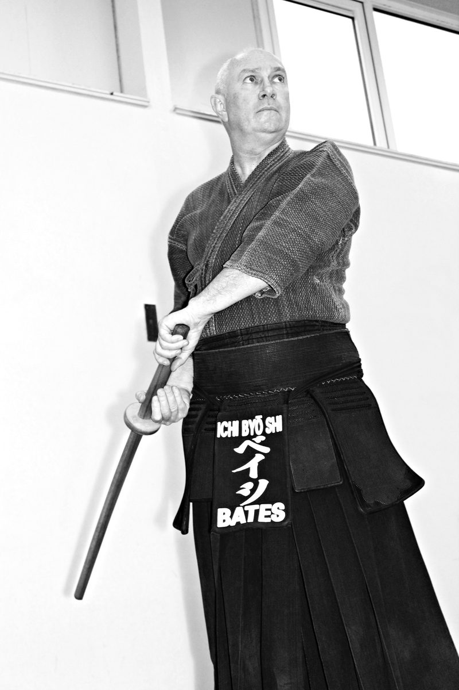
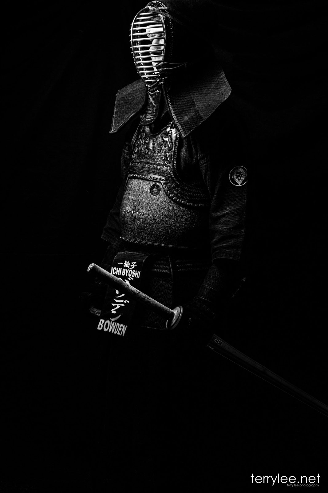
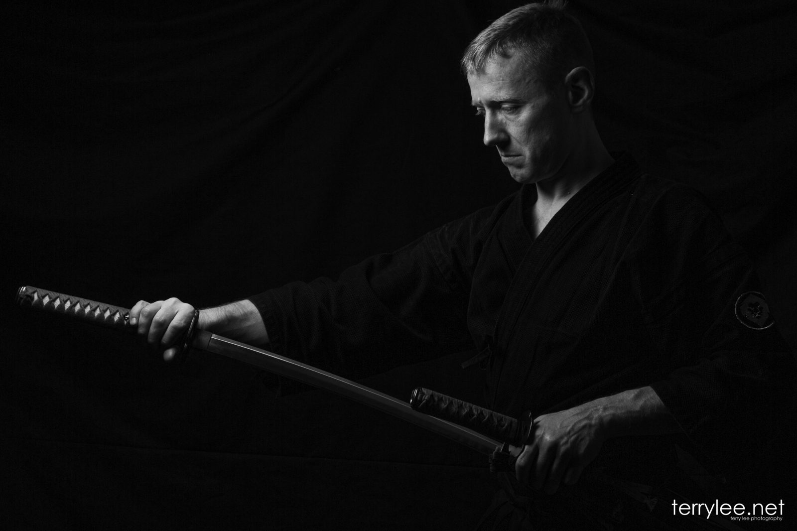

Sensei John Bates
3rd Dan
Senior Instructor
Sensei Bates has been practising Kendo since 2003. He founded Ichi ByōShi with Sensei Lesley Bates in 2006, and has won gold in the national kata competition.
ABOUT
一拍子
The club’s name comes from a saying of the legendary swordsman Miyamoto Musashi. It describes acting in a single instant, so that realisation, decision and action happen as one.
Kendo is a physically and mentally challenging activity that combines strong martial arts values with the physical demands of a sport. Practitioners are called kendōka, “one who practises kendo”, or kenshi, “swordsman”.
Kendo is practised in traditional clothing and protective armour (bōgu), using one or two bamboo swords (shinai). It is sometimes described as Japanese fencing, but the sword and the way it is used are different: kendo strikes with a defined edge and the tip of the shinai.
Training is noisy. Kendōka use a shout, kiai, to express their spirit, and every strike lands with a stamp of the front foot called fumikomi-ashi.


3rd Dan
Senior Instructor
Sensei Bates has been practising Kendo since 2003. He founded Ichi ByōShi with Sensei Lesley Bates in 2006, and has won gold in the national kata competition.

6th Dan
Instructor
Chris has practised Kendo around the world since 2006, starting while living in Korea. He trains with the GB squad and has represented Great Britain at the European Championships in Hungary (2017) and Serbia (2019) and the World Championships in Korea (2018).